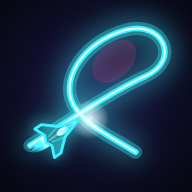
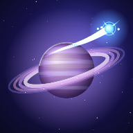
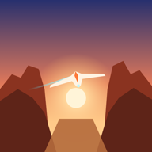
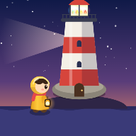
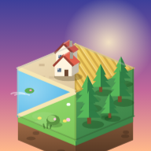
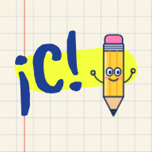

Toca un juego para jugar

Lazo de NeónCierra lazos de luz con tu estela para atrapar enemigos.
ÓrbitaCurva el vuelo del cometa con la gravedad de los planetas.
CéfiroPilota un planeador en 3D por cañones, fiordos y volcanes.
MareaAventura de puzles: devuelve las cuatro llamas al Faro Mayor.
Isla CelesteUne paisajes y construye tu isla flotante entre las nubes.
¡Clavado!Adivina gráficas y datos reales.